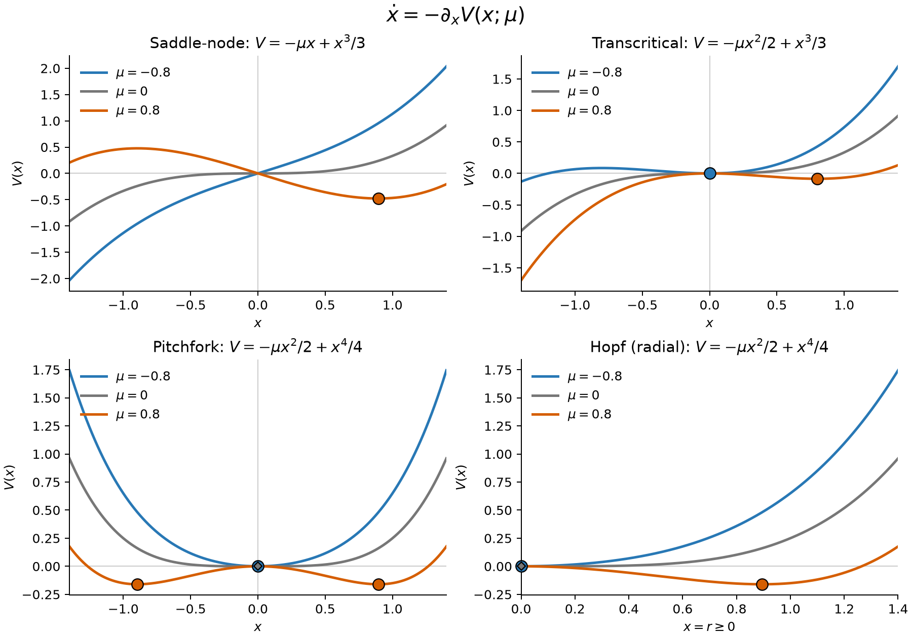
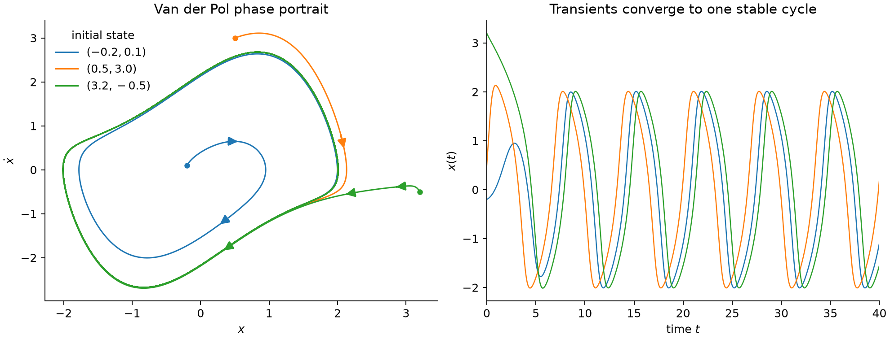
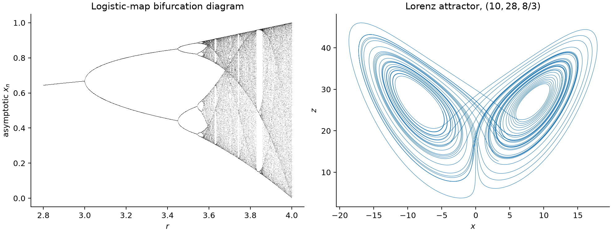

相空间
连续流与离散映射
自治连续系统写成
其中 \(\mu\) 是控制参数。给定初态 \(\boldsymbol x_0\)，若解在所考虑时间内存在且唯一，便定义流
离散系统则由映射迭代：
固定点与局部稳定性
Jacobian 与扰动增长
固定点 \(\boldsymbol x^*\) 满足
令 \(\boldsymbol x=\boldsymbol x^*+\boldsymbol\xi\)，Taylor 展开为
每个线性模式按 \(e^{\lambda t}\) 演化：实部决定增长或衰减，虚部决定振荡。所有特征值实部为负时，固定点局部渐近稳定；至少一个实部为正时，它不稳定。没有特征值落在虚轴上称为双曲情形，此时附近轨道的定性结构可由线性化判断。
当存在 \(\operatorname{Re}\lambda=0\) 时，线性项不能决定对应方向的稳定性。此时需要更高阶项。分岔恰好经常发生在这种非双曲情形。
Lyapunov 函数与稳定性
若存在标量函数 \(V(\boldsymbol x)\)，在 \(\boldsymbol x^*\) 附近满足
则 \(\boldsymbol x^*\) 稳定；若除固定点外 \(\dot V<0\)，通常可得局部渐近稳定。Lyapunov 函数给出单调量，像沿着能量地形下行；后文的 Lyapunov 指数则测量相邻轨道的分离率。
鞍结分岔
当 \(\mu>0\) 时有
所以正支稳定、负支不稳定；\(\mu<0\) 时局部没有固定点。临界点 \(\mu=0\) 处线性化特征值为零，松弛时间发散，这就是局部意义的临界慢化。
跨临界分岔
有固定点 \(x^*=0,\mu\)。因为
两支在 \(\mu=0\) 交换稳定性。
叉形分岔
超临界叉形正规形为
方程具有 \(x\mapsto-x\) 对称性。\(\mu<0\) 时原点稳定；\(\mu>0\) 时原点失稳，并产生两个稳定分支
Hopf 分岔
超临界 Hopf 正规形可写成复振幅方程
极坐标下
当 \(\mu<0\) 时 \(r=0\) 稳定；当 \(\mu>0\) 时原点失稳，并出现半径
的稳定极限环。线性增长 \(\mu r\) 把振幅推离零，非线性阻尼 \(-r^3\) 阻止它无限增大，两者平衡选出振幅。这是超临界 Hopf 的典型图景；一般系统还需一对共轭特征值非退化地横穿虚轴，其余特征值远离虚轴。
前三种一维动力学可以写成势函数的梯度形式：
Hopf 正规形的径向方程同样可写成 \(\dot r=-\partial_r V(r;\mu)\)，角向运动仍为 \(\dot\theta=\omega_0\)。

图 1｜不同控制参数下的势函数。 不同颜色对应 \(\mu=-0.8,0,0.8\)，各曲线取 \(V(0)=0\)。圆点标出稳定固定点；菱形标出叉形与 Hopf 径向方程在 \(\mu=0\) 时仍稳定、但曲率为零的临界点。运动沿势函数下降。Hopf 面板中的非零半径标记表示稳定振幅，对应完整系统的极限环。
分岔与相变
平均场相变理论用序参量的自由能全局极小值判断平衡态；若其弛豫动力学为 \(\dot x=-\partial_x V\)，自由能形状的改变便可用分岔描述。图 1 中的四种情况有如下对应：
| 分岔 | 平均场相变中的对应 | 势函数图像与序参量 |
|---|---|---|
| 鞍结 | 一级相变中亚稳态消失的旋节（spinodal）点 | 局部极小值与极大值相遇，势阱消失；一级相变的平衡共存点则由两个势阱等深确定，通常不在鞍结处。 |
| 跨临界 | 非负序参量的连续相变 | 限制 \(x\geq0\) 后，稳定态由 \(x^*=0\) 连续变为 \(x^*=\mu\)，平均场标度为 \(x^*\propto\mu\)。 |
| 超临界叉形 | 零场 Ising 型二阶连续相变 | 单阱变为对称双阱，序参量连续出现：\(x^*=\pm\sqrt\mu\)，即平均场指数 \(\beta=1/2\)。 |
| 超临界 Hopf | 连续的非平衡振荡转变 | 稳定振幅由零连续增大为 \(r_*=\sqrt\mu\)。径向势形似 Landau 势，角向旋转使有序态成为周期运动。 |
极限环
Van der Pol 振子的振幅选择
Van der Pol 方程为
定义线性振子能量 \(E=(x^2+\dot x^2)/2\)，则
当 \(|x|<1\) 时系统向振动注入能量；当 \(|x|>1\) 时耗散能量。小振幅被放大，大振幅在一周期内受到更强耗散，直到每周期的注入与损失平衡，形成稳定的自激振荡。

图 2｜极限环吸引不同初态，但不抹去相位差。
Poincaré 截面与返回映射
选择与流横截的 \((d-1)\) 维曲面 \(\Sigma\)，定义相邻交点的返回映射
连续系统的周期轨道对应 \(P\) 的固定点 \(\boldsymbol y^*\)。若 \(DP(\boldsymbol y^*)\) 的全部特征值模小于 1，极限环横向稳定。这些特征值是非平凡 Floquet 乘子；自治系统沿轨道切向总有一个中性乘子 1，对应时间平移。
极限环附近的相位约化
若横向扰动快速衰减，可用相位 \(\theta\) 描述轨道位置：
加入弱扰动 \(\epsilon\boldsymbol p(t)\) 后，一阶相位约化为
其中 \(\boldsymbol Z(\theta)=\nabla_{\boldsymbol x}\Theta|_{\boldsymbol x_0(\theta)}\) 是相位响应曲线。它测量在某一相位施加小扰动会让时钟提前还是延后。
弱耦合振子经平均后常得到 Kuramoto 型模型
复序参量
把相干程度压缩为 \(R\in[0,1]\)。同步阈值依赖频率分布、耦合拓扑和有限尺寸。
混沌与有限预测时域
初值敏感性与 Lyapunov 指数
对连续系统，微小扰动满足切向方程
由 \(\boldsymbol\delta(t)=D\Phi^t(\boldsymbol x_0)\boldsymbol\delta(0)\)，最大 Lyapunov 指数可定义为
正的 \(\lambda_{\max}\) 表示近邻轨道沿某个方向平均指数分离，微小初值误差因而会被放大。这里跟踪的是无穷小扰动的长期增长率；有限轨道只能给出估计，需检查采样长度和噪声的影响。
若初始误差为 \(\delta_0\)，容许误差为 \(\Delta\)，指数增长阶段的预测时域约为
Logistic 映射与倍周期分岔
离散 logistic 映射为
非零固定点 \(x^*=1-1/r\) 的乘子是
因此它在 \(1<r<3\) 稳定，并在 \(r=3\) 失稳。随后出现倍周期级联和周期窗口。对一维映射，沿轨道的 Lyapunov 指数为
\(\lambda>0\) 支持敏感依赖，但在有限样本中仍要排除瞬态、周期窗口、测量噪声和数值舍入。
Lorenz 系统：耗散、伸展与折叠
Lorenz 方程为
其散度恒为
所以任意小体积按 \(e^{-(\sigma+1+\beta)t}\) 收缩。\(\rho>1\) 时，除原点外还有两个对称固定点
负散度只证明无穷小体积收缩，不证明轨道有界。对 Lorenz 方程，可另外取径向无界的二次函数
在足够大的椭球之外 \(\dot{\mathcal V}<0\)，运动会被推回有界区域。在经典参数 \((\sigma,\rho,\beta)=(10,28,8/3)\) 下，轨道在两个叶片间不规则切换：局部伸展放大误差，折叠把轨道送回已经访问过的区域，耗散又不断压缩体积。伸展与收缩可以同时发生，因为它们作用在不同方向上。经典 Lorenz 吸引子的严格存在性见 Tucker 的证明。

图 3｜Logistic 映射与 Lorenz 吸引子。 左：Logistic 映射的长期迭代值随参数 \(r\) 的变化，展示倍周期分岔、混沌区及其中的周期窗口。右：\((\sigma,\rho,\beta)=(10,28,8/3)\) 时 Lorenz 轨道在 \(x\)–\(z\) 平面的投影。